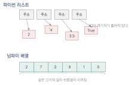
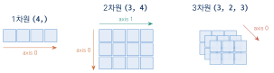
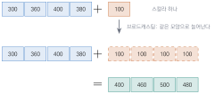
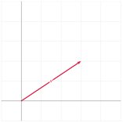

대규모 배열을 다루는 고성능 넘파이
이 장을 마치면
ndarray)이 파이썬 리스트와 무엇이 다른지 설명할 수 있다.shape, ndim, dtype으로 배열의 구조를 읽을 수 있다.np.linalg 모듈이 제공하는 선형대수 기능의 지도를 그릴 수 있다.lautils.py를 직접 만들 수 있다.
선형대수는 현실의 문제를 해결하는 강력한 도구다. 그런데 다루는 데이터의 수가 조금만 늘어나도 사람의 손으로 계산하는 것은 곧 불가능해진다. \(3 \times 3\) 행렬의 역행렬을 손으로 구해 본 사람이라면, \(100 \times 100\) 행렬 앞에서는 연필을 내려놓게 된다는 사실을 안다.
이 장에서 우리는 그 계산을 대신해 줄 도구인 넘파이NumPy를 익힌다. 다만 넘파이의 모든 기능을 훑는 대신, 선형대수를 다루는 데 꼭 필요한 것에 집중한다. 그리고 마지막 절에서는 이 책의 나머지 열한 개 장에서 계속 사용할 시각화 모듈을 직접 만든다. 남이 만든 상자를 가져다 쓰는 대신 우리 손으로 만드는 이유는, 그 안에서 무슨 일이 벌어지는지 알고 시작하기 위해서다.
2.1 과학자들이 좋아하는 넘파이
넘파이가 특별한 이유
2020년 9월, 저명한 과학 저널 네이처(Nature)에 「넘파이를 이용한 배열 프로그래밍」이라는 제목의 논문이 실렸다. 프로그래밍 라이브러리가 네이처의 표지를 장식하는 일은 흔치 않다. 이 논문은 텐서tensor라 불리는 다차원 배열을 효율적으로 다루는 넘파이가 과학 분야에 파이썬 생태계를 열어 주었고, 서로 다른 분야의 수치 계산 기술들이 서로 통할 수 있게 만들었다고 평가했다. 실제로 중력파 검출, 블랙홀 영상 재구성, 천문 데이터 분석 같은 굵직한 성과의 코드 안에는 어김없이 넘파이가 들어 있다.
넘파이가 이토록 널리 쓰이는 이유는 다음과 같이 정리할 수 있다.
| 특징 | 설명 |
|---|---|
| 효율성 | 내부 루틴이 C로 작성되어 있어 대규모 행렬 연산을 빠르게 수행한다. |
| 다차원 배열 | 벡터, 행렬, 텐서 등 선형대수의 모든 대상을 하나의 자료형으로 표현한다. |
| 간결성 | 역행렬, 고유값, 특이값 분해 같은 고급 연산이 한 줄이다. |
| 호환성 | 판다스, 사이킷런, 텐서플로, 파이토치가 모두 넘파이 배열 위에서 동작한다. |
| 생태계 | 사용자가 많아 예제와 문서를 쉽게 구할 수 있다. |
특히 마지막 항목이 중요하다. 딥러닝 프레임워크의 텐서는 사실상 "GPU에서 도는 넘파이 배열"이며, API도 의도적으로 비슷하게 설계되어 있다. 넘파이를 익히는 것은 곧 딥러닝 프레임워크의 절반을 익히는 것이다.
왜 리스트가 아니라 배열인가
파이썬에는 이미 리스트라는 훌륭한 자료구조가 있다. 그런데 왜 굳이 새로운 배열이 필요할까? 두 가지 이유가 있다.
첫째, 메모리에 놓이는 방식이 다르다. 파이썬 리스트는 서로 다른 자료형을 섞어 담을 수 있다. 이 유연함의 대가로, 리스트는 값 자체가 아니라 값이 있는 곳을 가리키는 주소를 나란히 저장한다. 반면 넘파이 배열은 같은 자료형의 값만 담기 때문에 항목 하나의 크기가 일정하고, 그 값들이 메모리에 빈틈없이 이어져 놓인다. 몇 번째 항목이든 시작 주소에 "번호 \(\times\) 항목 크기"를 더하면 곧바로 찾아갈 수 있다.

그림 2.1에서 보듯 리스트는 값을 찾아가는 데 한 번 더 건너뛰어야 하지만, 배열은 곧바로 계산해 접근한다. 게다가 이어져 있는 값들은 CPU가 한 번에 여러 개씩 읽어 처리할 수 있다.
둘째, 연산의 의미가 다르다. 리스트에 +를 쓰면 이어 붙이기가 되지만, 배열에 +를 쓰면 같은 위치의 값끼리 더해진다. 선형대수를 다루는 우리에게 필요한 것은 후자다.
import numpy as np
mid = [70, 85, 90, 75] # 파이썬 리스트
fin = [90, 65, 70, 85]
print('list +:', mid + fin) # 이어 붙이기
a = np.array(mid) # 넘파이 배열로 변환
b = np.array(fin)
print('array +:', a + b) # 같은 위치끼리 덧셈
print('average:', (a + b) / 2) # 나눗셈도 가능list +: [70, 85, 90, 75, 90, 65, 70, 85] array +: [160 150 160 160] average: [80. 75. 80. 80.]
+와 배열의 +는 다른 연산이다리스트로는 (mid + fin) / 2조차 불가능하다. 리스트는 나눗셈을 지원하지 않기 때문이다. 반면 배열은 두 벡터의 합을 구하고 그것을 2로 나누는 일이 수학 그대로 적힌다. 배열을 쓴다는 것은 코드를 수식처럼 적을 수 있게 된다는 뜻이다.
배열 만들기
넘파이 배열은 np.array()에 리스트를 넘겨 만드는 것이 기본이다. 그 밖에도 자주 쓰는 생성 함수가 있다.
import numpy as np
print(np.array([2, 3, 4])) # 리스트로부터
print(np.zeros(3)) # 0으로 채운 길이 3 배열
print(np.ones((2, 3))) # 1로 채운 2행 3열
print(np.arange(0, 10, 2)) # 0부터 10 전까지 2씩
print(np.linspace(0, 1, 5)) # 0부터 1까지 균등하게 5개
print(np.eye(3)) # 3x3 단위행렬[2 3 4] [0. 0. 0.] [[1. 1. 1.] [1. 1. 1.]] [0 2 4 6 8] [0. 0.25 0.5 0.75 1. ] [[1. 0. 0.] [0. 1. 0.] [0. 0. 1.]]
여기서 np.linspace()는 그래프를 그릴 때 가장 자주 쓰게 될 함수다. 구간을 균등하게 쪼개어 점을 찍어 주므로, 곡선을 그리거나 격자를 만들 때 쓰인다. np.eye()는 단위행렬을 만드는 함수인데, 이름은 단위행렬을 뜻하는 기호 \(I\)의 발음에서 왔다.
배열의 세 가지 신분증: shape, ndim, dtype
배열을 다루다 오류를 만났을 때 가장 먼저 확인해야 할 세 가지 속성이 있다.
import numpy as np
A = np.array([[1, 2, 3],
[4, 5, 6]])
print('shape :', A.shape) # 각 축의 원소 수
print('ndim :', A.ndim) # 축(차원)의 개수
print('size :', A.size) # 전체 원소 수
print('dtype :', A.dtype) # 원소의 자료형shape : (2, 3) ndim : 2 size : 6 dtype : int64
형상shape은 각 축axis에 원소가 몇 개 있는지를 튜플로 알려 준다. (2, 3)은 "0번 축(행)으로 2개, 1번 축(열)으로 3개"라는 뜻이다. 그림 2.2는 1–3차원 배열의 축을 보여 준다.

자료형dtype은 원소가 정수인지 실수인지를 나타낸다. 정수 배열에 실수를 대입하면 소수점 아래가 잘려 나가므로, 선형대수 계산에서는 대개 실수 배열을 쓴다. 정수 리스트로 배열을 만들었다면 astype(float)로 바꾸거나 처음부터 소수점을 찍어 주면 된다.
a = np.array([1, 2, 3]) # dtype이 int64
a[0] = 0.5 # 0.5를 넣었지만
print(a) # [0 2 3] — 소수점 아래가 사라졌다!np.array([1., 2., 3.])처럼 실수로 만들거나 dtype=float를 명시하는 습관을 들이자.- 넘파이 배열은 같은 자료형의 값을 메모리에 빈틈없이 이어 담기 때문에 빠르다.
- 리스트의
+는 이어 붙이기, 배열의+는 성분별 덧셈이다. - 오류를 만나면 가장 먼저
shape,ndim,dtype을 출력해 보자. - 계산용 배열은
dtype=float로 만드는 것이 안전하다.
2.2 넘파이의 고성능 연산 활용하기
벡터화 연산 — 반복문을 지우는 기술
넘파이 배열끼리 사칙연산을 하면 같은 위치의 원소끼리 연산이 이루어진다. 이것을 벡터화 연산vectorization이라고 한다. 반복문을 명시적으로 쓰지 않았는데도 모든 원소에 연산이 적용된다는 점이 핵심이다.
import numpy as np
a = np.array([1., 2., 3., 4.])
b = np.array([10., 20., 30., 40.])
print('a + b :', a + b)
print('a - b :', a - b)
print('a * b :', a * b) # 성분별 곱 (행렬 곱이 아니다!)
print('b / a :', b / a)
print('a ** 2:', a ** 2)
print('sqrt :', np.sqrt(a))a + b : [11. 22. 33. 44.] a - b : [ -9. -18. -27. -36.] a * b : [ 10. 40. 90. 160.] b / a : [10. 10. 10. 10.] a ** 2: [ 1. 4. 9. 16.] sqrt : [1. 1.41421356 1.73205081 2. ]
np.sqrt()처럼 배열의 모든 원소에 한꺼번에 적용되는 함수를 유니버설 함수universal function, 줄여서 ufunc이라고 부른다. np.sin, np.cos, np.exp, np.log, np.abs 등이 모두 여기에 속한다. 이들 덕분에 수학 공식을 반복문 없이 그대로 코드로 옮길 수 있다.
벡터화가 왜 빠른가
파이썬의 반복문은 한 번 돌 때마다 인터프리터가 "지금 다루는 것이 무슨 자료형인지" 확인하고, 그에 맞는 연산 함수를 찾아 호출한다. 원소가 천만 개면 이 확인 작업도 천만 번 일어난다. 반면 넘파이는 배열 전체의 자료형이 같다는 것을 알고 있으므로 확인을 한 번만 하고, 실제 계산은 C로 작성된 루프에 맡긴다. 게다가 현대 CPU는 단일 명령 다중 데이터SIMD 방식으로 여러 개의 값을 한 명령에 처리할 수 있는데, 값들이 메모리에 이어져 있어야 이 기능을 쓸 수 있다. 넘파이 배열은 정확히 그 조건을 만족한다.
직접 시간을 재어 확인해 보자.
import numpy as np
import time
N = 10_000_000
# 1) 순수 파이썬: 리스트 축약 표현
start = time.time()
ys_py = [x * x + 2 * x + 1 for x in range(N)]
t_py = time.time() - start
# 2) 넘파이: 벡터화 연산
arr = np.arange(N, dtype=float)
start = time.time()
ys_np = arr * arr + 2 * arr + 1
t_np = time.time() - start
print(f'Python list : {t_py:.3f} sec')
print(f'NumPy array : {t_np:.3f} sec')
print(f'Speedup : {t_py / t_np:.1f}x')Python list : 0.623 sec NumPy array : 0.027 sec Speedup : 23.0x
수십 배의 차이다. 이 차이는 데이터가 커질수록 더 벌어진다. 딥러닝 모델의 학습이 현실적인 시간 안에 끝나는 것은 이런 벡터화가 밑바닥에서 받쳐 주기 때문이다.
넘파이를 쓸 때 반복문이 보이면 의심하라. 대부분의 원소별 반복은 벡터화 연산 한 줄로 바꿀 수 있으며, 그렇게 바꾸면 코드가 짧아지는 동시에 수십 배 빨라진다.
브로드캐스팅 — 크기가 달라도 계산된다
배열과 스칼라를 연산하면 어떻게 될까? 크기가 다른 두 배열은?
import numpy as np
sal = np.array([300., 360., 400., 380.]) # 사원 4명의 급여(만 원)
print('bonus :', sal + 100) # 모두에게 100만 원 상여
print('raise :', sal * 1.2) # 일괄 20% 인상bonus : [400. 460. 500. 480.] raise : [360. 432. 480. 456.]
스칼라 100이 마치 [100, 100, 100, 100]인 것처럼 늘어나 계산되었다. 이렇게 크기가 다른 배열 사이의 연산에서 작은 쪽을 자동으로 늘려 맞추는 기능을 브로드캐스팅broadcasting이라고 한다.

브로드캐스팅은 스칼라뿐 아니라 배열끼리도 일어난다. 규칙은 간단하다. 두 배열의 형상을 오른쪽 끝에서부터 맞춰 보며, 크기가 같거나 한쪽이 1이면 늘려서 맞춘다.
import numpy as np
A = np.array([[1, 2, 3],
[4, 5, 6]]) # (2, 3)
row = np.array([10, 20, 30]) # (3,) -> 각 행에 더해짐
col = np.array([[100], [200]]) # (2, 1) -> 각 열에 더해짐
print(A + row)
print(A + col)[[11 22 33] [14 25 36]] [[101 102 103] [204 205 206]]
이 기능은 데이터 전처리에서 특히 유용하다. 예를 들어 각 열(특징)의 평균을 빼서 데이터를 중심에 모으는 작업이 한 줄이다. 이 작업은 11장의 주성분 분석에서 반드시 필요하다.
import numpy as np
X = np.array([[172., 68.], [160., 52.], [181., 79.],
[168., 60.], [155., 47.]])
mean = X.mean(axis=0) # 열별 평균 -> shape (2,)
Xc = X - mean # 브로드캐스팅으로 중심화
print('mean :', mean)
print('centered:\n', Xc)
print('new mean:', Xc.mean(axis=0))mean : [167.2 61.2] centered: [[ 4.8 6.8] [ -7.2 -9.2] [ 13.8 17.8] [ 0.8 -1.2] [-12.2 -14.2]] new mean: [ 1.13686838e-14 -2.84217094e-15]
축(axis)을 지정하는 집계
sum, mean, max 같은 집계 함수는 axis 인자로 "어느 방향으로 합칠지"를 지정한다. 이것이 헷갈린다면 "지정한 축이 사라진다"고 외우면 된다.
import numpy as np
S = np.array([[80, 90, 70], # 학생 1의 국·영·수
[60, 75, 95], # 학생 2
[88, 82, 79]]) # 학생 3
print('전체 평균 :', S.mean())
print('과목별 평균 :', S.mean(axis=0)) # 행이 사라짐 -> 열별 결과
print('학생별 평균 :', S.mean(axis=1)) # 열이 사라짐 -> 행별 결과
print('shape 확인 :', S.mean(axis=0).shape, S.mean(axis=1).shape)전체 평균 : 79.88888888888889 과목별 평균 : [76. 82.33333333 81.33333333] 학생별 평균 : [80. 76.66666667 83. ] shape 확인 : (3,) (3,)
axis 인자로 집계 방향 지정하기(3, 4) 형상의 배열에서 axis=0으로 합치면 결과는 (4,)가 되고, axis=1로 합치면 (3,)이 된다. 즉 axis=k로 집계하면 \(k\)번째 축이 튜플에서 빠진다. 이 규칙 하나면 3차원 이상에서도 헷갈리지 않는다.
인덱싱과 슬라이싱 — 행과 열 꺼내기
행렬에서 특정 행이나 열을 꺼내는 일은 선형대수에서 끊임없이 필요하다.
import numpy as np
A = np.array([[1, 2, 3],
[4, 5, 6],
[7, 8, 9]])
print('A[0, 2] :', A[0, 2]) # 0행 2열 성분
print('A[1, :] :', A[1, :]) # 1행 전체
print('A[:, 0] :', A[:, 0]) # 0열 전체
print('A[0:2, 1:3]:\n', A[0:2, 1:3])
print('대각성분 :', np.diag(A))A[0, 2] : 3 A[1, :] : [4 5 6] A[:, 0] : [1 4 7] A[0:2, 1:3]: [[2 3] [5 6]] 대각성분 : [1 5 9]
콜론(:)은 "그 축의 전부"를 뜻한다. A[:, 0]은 "모든 행의 0열", 즉 첫 번째 열벡터다. 데이터 행렬에서 특징 하나를 통째로 꺼낼 때 늘 쓰는 표현이다.
조건을 이용한 불리언 인덱싱boolean indexing도 자주 쓰인다.
import numpy as np
v = np.array([10, -3, 25, -8, 40, 0])
print('양수만 :', v[v > 0])
print('마스크 :', v > 0)
print('음수를 0으로:', np.where(v < 0, 0, v)) # ReLU와 같은 동작양수만 : [10 25 40] 마스크 : [ True False True False True False] 음수를 0으로: [10 0 25 0 40 0]
np.where마지막 줄의 np.where()는 신경망의 ReLU 활성화 함수와 정확히 같은 동작이다. 조건에 따라 값을 골라 담는 이 연산도 반복문 없이 한 줄로 처리된다.
슬라이싱은 복사가 아니라 뷰view다. B = A[0:2, :]로 잘라낸 B를 수정하면 원본 A도 함께 바뀐다. 원본을 지키려면 B = A[0:2, :].copy()처럼 명시적으로 복사해야 한다. 소거법을 직접 구현하는 8장에서 이 함정을 꼭 기억해야 한다.
2.3 선형대수를 척척 다루는 넘파이의 기능
np.linalg — 선형대수 전용 창고
넘파이에는 linalg(linear algebra의 줄임말)라는 하위 모듈이 있고, 이 책에서 배울 거의 모든 계산이 여기에 함수로 들어 있다. 지금 각 함수의 의미를 알 필요는 없다. 이 절의 목적은 앞으로 우리가 어디까지 갈 것인지 지도를 한 번 펼쳐 보는 것이다.
| 함수 | 하는 일 | 배울 장 |
|---|---|---|
A @ B, np.matmul | 행렬 곱 | 5장 |
np.linalg.norm | 벡터의 길이(노름) | 4장 |
np.dot, np.inner | 내적 | 4장 |
np.cross | 외적(3차원) | 4장 |
np.linalg.inv | 역행렬 | 6장 |
np.linalg.det | 행렬식 | 7장 |
np.linalg.solve | 연립일차방정식의 해 | 8장 |
np.linalg.matrix_rank | 계수(랭크) | 8장 |
np.linalg.eig | 고유값과 고유벡터 | 9장 |
np.linalg.eigh | 대칭행렬의 고유값 분해 | 10장 |
np.linalg.matrix_power | 행렬의 거듭제곱 | 10장 |
np.linalg.svd | 특이값 분해 | 11장 |
np.linalg.pinv | 유사 역행렬 | 12장 |
np.linalg.lstsq | 최소제곱 해 | 12장 |
np.linalg.qr | QR 분해 | 12장 |
표를 보면 알 수 있듯, 선형대수의 주요 주제 하나하나에 대응하는 함수가 딱 하나씩 있다. 이 책은 이 표를 위에서 아래로 훑어 내려가는 여정이라고 봐도 좋다. 다만 우리는 함수를 호출하는 데서 멈추지 않고, 그 함수가 무엇을 계산하는지 손으로 한 번, 그림으로 한 번 더 확인할 것이다.
미리 맛보기 — 세 줄로 끝나는 문제들
앞으로 여러 장에 걸쳐 배울 내용을, 지금은 이해하지 못한 채로 실행만 해 보자. 각각이 얼마나 간결한지 확인하는 것이 목적이다.
import numpy as np
A = np.array([[4., 1.],
[2., 3.]])
b = np.array([9., 11.])
print('det :', np.linalg.det(A)) # 넓이가 몇 배로 변하는가 (7장)
print('inv :\n', np.linalg.inv(A)) # 되돌리는 변환 (6장)
print('solve :', np.linalg.solve(A, b)) # Ax = b 의 해 (8장)
w, V = np.linalg.eig(A) # 방향이 보존되는 축 (9장)
print('eigenvalues :', w)
print('eigenvectors:\n', V)det : 10.000000000000002 inv : [[ 0.3 -0.1] [-0.2 0.4]] solve : [1.6 2.6] eigenvalues : [5. 2.] eigenvectors: [[ 0.70710678 -0.4472136 ] [ 0.70710678 0.89442719]]
여덟 줄의 코드가 대학 선형대수 한 학기 분량의 계산을 해치웠다. 그렇다면 우리는 왜 이 책을 읽어야 할까? 저 숫자들이 무엇을 뜻하는지 모르면 아무것도 할 수 없기 때문이다. 행렬식이 10이라는 것은 무슨 뜻인가? 고유값이 5와 2라는 것은? 고유벡터의 첫 열이 \((0.707, 0.707)\)이라는 것은? 이 질문들에 그림으로 답하는 것이 이 책이 하는 일이다.
위 출력에서 행렬식이 정확히 10이 아니라 10.000000000000002로 나왔다. 컴퓨터는 실수를 유한한 자릿수로만 저장하므로 미세한 오차가 늘 따라다닌다. 따라서 det(A) == 0과 같은 비교는 절대 하면 안 된다. 대신 abs(det(A)) < 1e-10처럼 허용 오차를 두고 판단해야 한다. 이 문제는 7장과 8장에서 다시 다룬다.
자주 쓰는 배열 변형
계산 도중 배열의 모양을 바꿔야 하는 일이 자주 생긴다. 특히 reshape과 전치는 앞으로 계속 쓰인다.
import numpy as np
a = np.arange(6) # [0 1 2 3 4 5]
A = a.reshape(2, 3) # 2행 3열로 재배치
print(A)
print('전치 A.T :\n', A.T) # 행과 열을 맞바꿈
print('평탄화 :', A.flatten()) # 다시 1차원으로
print('-1 사용 :', a.reshape(3, -1).shape) # -1은 알아서 계산[[0 1 2] [3 4 5]] 전치 A.T : [[0 3] [1 4] [2 5]] 평탄화 : [0 1 2 3 4 5] -1 사용 : (3, 2)
reshape과 전치reshape에 \(-1\)을 넣으면 나머지 축의 크기로부터 자동으로 계산된다. 원소가 6개인 배열을 reshape(3, -1)하면 \(-1\) 자리는 자연히 2가 된다. 이미지 데이터를 벡터로 펴거나 되돌릴 때 매우 편리한 기능으로, 11장의 이미지 압축 실습에서 사용한다.
난수와 재현성
실험을 할 때 난수는 필수적이지만, 실행할 때마다 결과가 달라지면 책의 출력과 맞춰 보기 어렵다. 그래서 시드seed를 고정한다.
import numpy as np
rng = np.random.default_rng(42) # 시드 42로 난수 생성기 준비
print(rng.random(3)) # 0~1 균등분포 3개
print(rng.normal(0, 1, 3)) # 평균 0, 표준편차 1인 정규분포 3개
print(rng.integers(1, 7, 5)) # 1~6 정수 5개 (주사위)[0.77395605 0.43887844 0.85859792] [ 0.94056472 -1.95103519 -1.30217951] [5 5 5 5 4]
시드를 같은 값으로 두면 언제 어디서 실행해도 같은 난수가 나온다. 이 책의 난수 예제는 모두 default_rng(42)를 사용하므로, 여러분의 화면에도 책과 같은 숫자가 나타날 것이다.
np.random.seed()는 이제 옛 방식이다예전 코드에서는 np.random.seed(42)와 np.random.rand()를 썼다. 지금도 동작하지만, 넘파이는 default_rng()로 생성기 객체를 만들어 쓰는 새로운 방식을 권장한다. 전역 상태를 건드리지 않아 여러 실험을 섞어 돌릴 때 안전하기 때문이다. 이 책은 새 방식을 따른다.
2.4 그리기 도구 만들기 — lautils.py
왜 도구를 직접 만드는가
1장에서 벡터 하나를 그리는 데 여덟 줄이 필요했다. 축 범위를 정하고, 비율을 맞추고, 격자를 켜고, 좌표축을 그리고, 화살표를 놓았다. 이 여덟 줄을 앞으로 수백 번 반복해 적을 수는 없다.
그렇다고 남이 만든 시각화 라이브러리를 가져다 쓰면, 그 안에서 무슨 일이 일어나는지 모른 채로 그림만 받아 보게 된다. 그래서 우리는 필요한 만큼만, 우리 손으로 도구를 만든다. 이 절에서 만들 lautils.py는 함수 여덟 개짜리 작은 파일이지만, 이 책의 나머지 열한 개 장이 이 파일 위에서 돌아간다.
여기서는 2차원 그림에 필요한 핵심 여덟 개만 만든다. 3차원 함수까지 갖춘 완성본은 부록 B에 실려 있으니, 3차원이 본격적으로 등장하는 13장 전에 부록 B의 파일로 바꿔 두면 된다.
| 함수 | 하는 일 |
|---|---|
new_axes() | 비율이 맞고 축이 그려진 빈 좌표평면을 준비한다 |
draw_vector() | 화살표 하나를 그린다 |
draw_vectors() | 여러 개의 화살표를 색을 바꿔 가며 그린다 |
draw_points() | 점들을 찍는다 |
draw_polygon() | 다각형을 색으로 채운다 (넓이 시각화) |
draw_grid() | 격자를 그린다. 행렬을 주면 변환된 격자를 그린다 |
transform() | 점들의 묶음에 행렬을 적용한다 |
show_matrix() | 행렬을 색과 숫자로 함께 보여 준다 |
모듈 만들기
코랩을 쓴다면 새 셀에 다음 코드를 넣고 실행하면 된다. 첫 줄의 %%writefile은 셀의 내용을 파일로 저장하라는 코랩(정확히는 주피터)의 명령이다. 내 컴퓨터에서 작업한다면 그 줄을 빼고 lautils.py라는 이름으로 저장하면 된다.
"""lautils.py — 『쓸모 있는 선형대수』 전용 시각화 도구
numpy와 matplotlib만 사용한다. 모든 함수는 matplotlib의 Axes 객체를
첫 인자로 받아 그 위에 그린다.
"""
import numpy as np
import matplotlib.pyplot as plt
# 벡터를 여러 개 그릴 때 순서대로 사용할 색
PALETTE = ['crimson', 'royalblue', 'seagreen', 'darkorange',
'purple', 'teal', 'saddlebrown', 'deeppink']
# 단위 정사각형의 네 꼭짓점 (넓이 시각화에 사용)
UNIT_SQUARE = np.array([[0., 0.], [1., 0.], [1., 1.], [0., 1.]])
def new_axes(xlim=(-5, 5), ylim=(-5, 5), figsize=(4.5, 4.5), grid=True):
"""비율이 1:1로 맞춰진 빈 좌표평면을 만들어 (fig, ax)를 돌려준다."""
fig, ax = plt.subplots(figsize=figsize)
ax.set_xlim(*xlim)
ax.set_ylim(*ylim)
ax.set_aspect('equal') # 각도와 길이가 왜곡되지 않도록
if grid:
ax.grid(True, alpha=0.3, lw=0.5)
ax.axhline(0, color='black', lw=0.8)
ax.axvline(0, color='black', lw=0.8)
return fig, ax
def draw_vector(ax, v, origin=(0, 0), color='crimson', label=None,
width=0.012, alpha=1.0):
"""원점(또는 지정한 시작점)에서 v 방향으로 화살표를 그린다."""
v = np.asarray(v, dtype=float)
o = np.asarray(origin, dtype=float)
ax.quiver(o[0], o[1], v[0], v[1],
angles='xy', scale_units='xy', scale=1,
color=color, width=width, alpha=alpha, zorder=3)
if label is not None:
mid = o + v * 0.55 # 화살표 중간쯤에 이름표
ax.text(mid[0] + 0.12, mid[1] + 0.12, label,
color=color, fontsize=10)
return ax
def draw_vectors(ax, vs, origin=(0, 0), labels=None, alpha=1.0):
"""여러 벡터를 PALETTE 순서대로 색을 바꿔 가며 그린다."""
vs = np.asarray(vs, dtype=float)
for i, v in enumerate(vs):
lab = None if labels is None else labels[i]
draw_vector(ax, v, origin=origin, color=PALETTE[i % len(PALETTE)],
label=lab, alpha=alpha)
return ax
def draw_points(ax, P, color='darkorange', s=40, label=None, marker='o'):
"""행마다 점 하나가 담긴 배열 P를 산점도로 찍는다."""
P = np.asarray(P, dtype=float)
ax.scatter(P[:, 0], P[:, 1], s=s, color=color, marker=marker,
label=label, zorder=4)
return ax
def draw_polygon(ax, P, color='goldenrod', alpha=0.35, edge=True):
"""꼭짓점 목록 P가 이루는 다각형을 색으로 채운다 (넓이 표현용)."""
P = np.asarray(P, dtype=float)
ax.fill(P[:, 0], P[:, 1], color=color, alpha=alpha, zorder=1)
if edge:
loop = np.vstack([P, P[0]]) # 마지막 점을 처음과 이어 닫기
ax.plot(loop[:, 0], loop[:, 1], color=color, lw=1.2, zorder=2)
return ax
def draw_grid(ax, A=None, n=4, color='steelblue', alpha=0.55, lw=0.7):
"""단위 격자를 그린다. 행렬 A를 주면 A로 변환된 격자를 그린다."""
A = np.eye(2) if A is None else np.asarray(A, dtype=float)
t = np.linspace(-n, n, 2 * n + 1) # 격자선의 위치
s = np.linspace(-n, n, 40) # 선 위의 표본점
for k in t:
horiz = np.vstack([s, np.full_like(s, k)]) # 가로선 (2, 40)
vert = np.vstack([np.full_like(s, k), s]) # 세로선 (2, 40)
for line in (horiz, vert):
q = A @ line # 각 점에 A를 적용
ax.plot(q[0], q[1], color=color, alpha=alpha, lw=lw, zorder=0)
return ax
def transform(A, P):
"""행마다 점 하나가 담긴 배열 P의 모든 점에 행렬 A를 적용한다."""
A = np.asarray(A, dtype=float)
P = np.asarray(P, dtype=float)
return (A @ P.T).T
def show_matrix(ax, A, fmt='{:.2f}', cmap='RdBu_r', title=None):
"""행렬을 색상 격자와 숫자로 함께 보여 준다."""
A = np.asarray(A, dtype=float)
lim = np.abs(A).max()
lim = 1.0 if lim == 0 else lim
ax.imshow(A, cmap=cmap, vmin=-lim, vmax=lim)
for i in range(A.shape[0]):
for j in range(A.shape[1]):
ax.text(j, i, fmt.format(A[i, j]),
ha='center', va='center', fontsize=9)
ax.set_xticks(range(A.shape[1]))
ax.set_yticks(range(A.shape[0]))
ax.set_aspect('equal')
if title:
ax.set_title(title, fontsize=10)
return ax동작 확인
파일을 저장했다면 불러서 써 보자. from lautils import *는 이 파일의 모든 함수를 이름 그대로 가져오는 표현이다.
import numpy as np
import matplotlib.pyplot as plt
from lautils import * # 방금 만든 모듈
fig, ax = new_axes(xlim=(-1, 5), ylim=(-1, 5), figsize=(4, 4))
draw_vector(ax, [3, 2], label='v')
plt.show()lautils로 다시 그린 1장의 그림1장에서 여덟 줄이었던 코드가 두 줄이 되었다. 앞으로 모든 예제는 이 형태로 시작한다.
맛보기 — 격자를 변형해 보기
draw_grid()에 행렬을 넘기면 그 행렬이 평면을 어떻게 변형하는지 한눈에 보인다. 이것이 이 책의 3부 전체를 관통하는 그림이다. 지금은 원리를 몰라도 좋으니, 숫자를 바꿔 가며 격자가 어떻게 휘는지 구경해 보자.
import numpy as np
import matplotlib.pyplot as plt
from lautils import *
A = np.array([[1.0, 0.8],
[0.3, 1.4]])
fig, ax = new_axes(xlim=(-4, 4), ylim=(-4, 4), figsize=(4.5, 4.5), grid=False)
draw_grid(ax, None, n=3, color='lightgray') # 원래 격자
draw_grid(ax, A, n=3, color='steelblue') # A로 변환된 격자
draw_polygon(ax, transform(A, UNIT_SQUARE)) # 단위 정사각형의 상
draw_vector(ax, A[:, 0], color='crimson', label='A e1') # 첫 열
draw_vector(ax, A[:, 1], color='royalblue', label='A e2') # 둘째 열
plt.show()
그림 2.4에서 회색 격자는 원래의 평면이고 파란 격자는 \(\mm{A}\)가 적용된 뒤의 평면이다. 눈여겨볼 점이 세 가지 있다.
- 격자는 여전히 평행한 직선들이다. 휘거나 끊어지지 않았다. 이것이 선형변환의 특징이다.
- 원점은 움직이지 않았다. 모든 선형변환은 원점을 고정한다.
- 노란 사각형의 넓이가 변했다. 원래 넓이 1이던 단위 정사각형이 조금 커졌다. 얼마나 커졌는지를 알려 주는 값이 바로 행렬식이며, 7장의 주제다.
lautils.py는 이 책 전체에서 사용할 여덟 개의 시각화 함수를 담은 파일이다.- 모든 함수는 첫 인자로
ax를 받아 그 위에 그린다. 그래서 여러 요소를 겹쳐 그릴 수 있다. draw_grid(ax, A)는 행렬 \(\mm{A}\)가 평면을 어떻게 변형하는지 보여 준다. 3부의 모든 그림이 이 함수를 쓴다.- 전체 소스는 부록 B에도 실려 있다.
3차원과 대화형 그림
앞으로 대부분의 그림은 2차원이다. 2차원에서 성립하는 규칙이 고차원에서도 그대로 성립하므로(3장), 개념을 잡는 데는 평면으로 충분하기 때문이다. 그러나 외적(4장), 평행육면체의 부피(7장), 부분공간(8장)처럼 3차원이라야 보이는 것들도 있다.
부록 B의 완성본에는 3차원 함수가 함께 들어 있다. 사용법은 놀랄 만큼 단순하다. 캔버스를 만드는 첫 줄만 바꾸면 된다.
fig, ax = new_axes() # 2차원
fig, ax = new_axes3d() # 3차원 — 나머지 코드는 그대로draw_vector, draw_points, draw_polygon 등은 넘겨받은 배열의 길이를 보고 2차원인지 3차원인지 스스로 판단한다. 여기에 행렬의 열이 만드는 도형을 한 번에 그려 주는 draw_matrix가 더해지는데, \(2\times2\)이면 평행사변형을, \(3\times3\)이면 평행육면체를 그린다. 7장에서 행렬식을 넓이와 부피로 이해할 때 이 함수를 계속 쓰게 된다.
맷플롯립의 3차원 그림은 보는 각도가 고정되어 있어 답답할 때가 있다. 마우스로 돌려 가며 보고 싶다면 부록 B에 함께 소개한 tuvis.py를 쓰면 된다. plotly로 그리므로 코랩에서 회전·확대가 되고, 함수 이름과 인자가 lautils와 완전히 같아서 맨 윗줄의 import만 바꾸면 같은 코드가 그대로 동작한다.
from lautils import * # 정적 그림 (저장·인쇄용)
# from tuvis import * # 대화형 그림 (pip install plotly 필요)이 책의 도판은 종이에 실려야 하므로 모두 lautils로 그렸다. 개념은 책의 그림으로 잡고, 손으로 돌려 보고 싶을 때 tuvis로 바꿔 실행해 보기를 권한다.
- 리스트와 배열의 차이를 확인하시오. 같은 데이터를 리스트와 배열로 만들어
+,*연산의 결과를 비교하시오.import numpy as np L = [1, 2, 3] A = np.array([1., 2., 3.]) print('list * 2 :', L * 2) # 반복 print('array * 2 :', A * 2) # 각 원소에 곱셈 print('list + L :', L + L) # 이어 붙이기 print('array + A :', A + A) # 성분별 덧셈list * 2 : [1, 2, 3, 1, 2, 3] array * 2 : [2. 4. 6.] list + L : [1, 2, 3, 1, 2, 3] array + A : [2. 4. 6.]
- 성적표를 행렬로 다루어 보자. 학생 5명의 국어·영어·수학 성적을 \(5 \times 3\) 배열로 만들고, 과목별 평균과 학생별 평균을 각각 구하시오. 또 모든 점수에 5점을 가산하시오.
import numpy as np S = np.array([[85., 92., 78.], [90., 88., 95.], [76., 80., 70.], [65., 71., 88.], [92., 95., 91.]]) print('과목별 평균 :', S.mean(axis=0)) print('학생별 평균 :', S.mean(axis=1)) print('가산 후 최고점 :', (S + 5).max()) print('90점 이상 개수 :', (S >= 90).sum())과목별 평균 : [81.6 85.2 84.4] 학생별 평균 : [85. 91. 75.33333333 74.66666667 92.66666667] 가산 후 최고점 : 100.0 90점 이상 개수 : 6
(S >= 90)은 참/거짓 배열을 만들고,.sum()은True를 1로 세어 개수를 알려 준다. 조건에 맞는 데이터의 개수를 세는 관용적인 표현이다. - 브로드캐스팅으로 곱셈표를 만들어 보자. 반복문 없이 \(1\)부터 \(9\)까지의 구구단 표를 \(9 \times 9\) 배열로 만드시오.
import numpy as np row = np.arange(1, 10) # shape (9,) col = row.reshape(9, 1) # shape (9, 1) table = col * row # 브로드캐스팅 -> (9, 9) print(table) print('shape :', table.shape)(9,1)과(9,)가 만나면 각각(9,9)로 늘어나 모든 조합의 곱이 만들어진다. 이중 반복문이 브로드캐스팅 한 줄로 사라졌다. - 만든 도구를 시험하시오.
lautils.py를 불러 서로 다른 세 벡터를 그리고, 그 벡터들이 이루는 삼각형을 색으로 채우시오.import numpy as np import matplotlib.pyplot as plt from lautils import * P = np.array([[3., 1.], [1., 3.], [-2., -1.]]) fig, ax = new_axes(xlim=(-4, 4), ylim=(-4, 4)) draw_polygon(ax, P, color='skyblue', alpha=0.3) draw_vectors(ax, P, labels=['a', 'b', 'c']) draw_points(ax, P, color='black', s=25) plt.show() - 행렬을 그림으로 보자. \(5 \times 5\) 크기의 무작위 행렬을 만들고
show_matrix()로 표시한 뒤, 그 행렬과 자기 자신의 전치를 나란히 비교하시오.import numpy as np import matplotlib.pyplot as plt from lautils import * rng = np.random.default_rng(42) M = rng.normal(0, 1, (5, 5)) fig, (ax1, ax2) = plt.subplots(1, 2, figsize=(8, 4)) show_matrix(ax1, M, title='M') show_matrix(ax2, M.T, title='M.T') plt.tight_layout() plt.show()두 그림은 대각선을 기준으로 서로 뒤집힌 모양이다. 전치가 무엇을 하는 연산인지 숫자를 보지 않고도 알 수 있다.
- 벡터화의 위력을 직접 재어 보자. 원소 100만 개짜리 배열의 모든 값에 \(\sin\)을 적용하는 작업을, 반복문과 벡터화로 각각 수행하고 시간을 비교하시오.
import numpy as np import time import math N = 1_000_000 x = np.linspace(0, 2 * np.pi, N) start = time.time() y1 = [math.sin(v) for v in x] # 파이썬 반복문 t1 = time.time() - start start = time.time() y2 = np.sin(x) # 유니버설 함수 t2 = time.time() - start print(f'loop : {t1:.3f} sec') print(f'vectorized: {t2:.3f} sec') print(f'speedup : {t1 / t2:.1f}x') print('같은 결과인가 :', np.allclose(y1, y2))loop : 0.061 sec vectorized: 0.004 sec speedup : 15.6x 같은 결과인가 : True
마지막 줄의
np.allclose()는 두 배열이 오차 범위 안에서 같은지 확인하는 함수다. 부동소수점 계산에서==대신 반드시 써야 하는 함수이므로 기억해 두자. - 대각 성분만 남기고 지워 보자. \(6 \times 6\) 무작위 행렬에서 대각 성분을 제외한 모든 값을 0으로 만드시오. 반복문 없이 처리하는 방법을 찾아보시오.
import numpy as np rng = np.random.default_rng(0) A = rng.integers(1, 10, (6, 6)) D = np.diag(np.diag(A)) # 대각 성분을 뽑아(1차원) 다시 대각행렬로 print(D)np.diag()는 재미있는 함수다. 2차원 배열을 주면 대각 성분을 1차원으로 뽑아 주고, 1차원 배열을 주면 그것을 대각선에 놓은 2차원 행렬을 만들어 준다. 이 성질을 이용해 두 번 적용하면 대각행렬만 남는다. 10장의 대각화에서 이 표현을 계속 쓰게 된다.
2장 요약
- 넘파이 배열(
ndarray)은 같은 자료형의 값을 메모리에 빈틈없이 이어 담는다. 이 구조 덕분에 임의의 위치에 즉시 접근할 수 있고, CPU가 여러 값을 한 번에 처리할 수 있다. - 리스트의
+는 이어 붙이기이고*는 반복이지만, 배열의+와*는 성분별 연산이다. 배열을 쓰면 코드를 수식처럼 적을 수 있다. - 배열 생성 함수:
np.array(),np.zeros(),np.ones(),np.arange(),np.linspace(),np.eye(). - 배열의 구조는
shape(각 축의 원소 수),ndim(축의 개수),size(전체 원소 수),dtype(원소의 자료형)으로 확인한다. 오류가 나면 가장 먼저 이 값들을 출력해 보아야 한다. - 정수 배열에 실수를 대입하면 소수점 아래가 경고 없이 잘려 나간다. 계산용 배열은
dtype=float로 만드는 습관을 들이자. - 벡터화 연산은 반복문 없이 모든 원소에 연산을 적용한다. 자료형 확인을 한 번만 하고 C 루프로 계산하므로 파이썬 반복문보다 수십 배 빠르다.
np.sin,np.exp등 유니버설 함수도 마찬가지다. - 브로드캐스팅은 크기가 다른 배열끼리의 연산에서 작은 쪽을 자동으로 늘려 맞춘다. 형상을 오른쪽 끝에서부터 비교해 크기가 같거나 한쪽이 1이면 확장한다. 데이터 중심화(
X - X.mean(axis=0))가 대표적인 활용이다. - 집계 함수의
axis인자는 "지정한 축이 사라진다"로 기억하면 된다.(3,4)배열을axis=0으로 합치면(4,)가 된다. - 슬라이싱
A[i, :]는 \(i\)행 전체,A[:, j]는 \(j\)열 전체를 뜻한다. 슬라이싱 결과는 복사본이 아니라 뷰이므로, 원본을 지키려면.copy()를 써야 한다. - 불리언 인덱싱(
v[v > 0])과np.where()로 조건에 따른 선택을 반복문 없이 처리한다.np.where(v < 0, 0, v)는 신경망의 ReLU와 같은 동작이다. np.linalg모듈에 이 책에서 배울 거의 모든 계산이 함수로 준비되어 있다:inv,det,solve,eig,svd,pinv,lstsq,qr등.- 부동소수점 오차 때문에
det(A) == 0같은 비교는 위험하다.np.allclose()나 허용 오차를 둔 비교를 사용해야 한다. - 난수는
rng = np.random.default_rng(42)처럼 생성기를 만들어 쓴다. 시드를 고정하면 결과가 재현된다. - 이 책 전체에서 사용할 시각화 모듈
lautils.py를 직접 만들었다.new_axes,draw_vector,draw_vectors,draw_points,draw_polygon,draw_grid,transform,show_matrix의 여덟 함수로 이루어져 있으며 전체 소스는 부록 B에 있다.
2장 연습문제
- ★ 넘파이 배열이 파이썬 리스트보다 빠른 이유를 메모리 배치와 자료형의 관점에서 각각 설명하시오.
- ★ 다음 배열의
shape,ndim,size를 코드를 실행하지 않고 예측한 뒤 확인하시오.A = np.array([[[1, 2], [3, 4], [5, 6]], [[7, 8], [9, 10], [11, 12]]]) - ★
np.arange(0, 20, 3)과np.linspace(0, 20, 3)의 결과가 어떻게 다른지 설명하시오. - ★★ 다음 코드의 출력 결과를 예측하고 이유를 쓰시오.
a = np.array([1, 2, 3]) a[1] = 2.9 print(a, a.dtype) - ★★ \(3 \times 4\) 배열
A에 대해 다음 연산이 가능한지 판단하고, 가능하다면 결과의shape을 쓰시오.A + np.array([1, 2, 3, 4])A + np.array([1, 2, 3])A + np.array([[1], [2], [3]])A.sum(axis=1)
- ★★ 학생 4명의 (국어, 영어, 수학) 성적 배열을 만들고, 브로드캐스팅만 사용하여 각 과목의 평균이 0이 되도록 중심화하시오. 중심화 후 열별 평균이 실제로 0인지
np.allclose()로 확인하시오. - ★★ 반복문 없이 \(1\)부터 \(100\)까지의 정수 중 3의 배수만 골라 그 합을 구하는 코드를 한 줄로 작성하시오. (힌트: 불리언 인덱싱)
- ★★★ 다음 두 코드의 결과가 다른 이유를 설명하시오.
A = np.array([[1, 2], [3, 4]]) B = A[0, :] B[0] = 99 print(A) # 결과 1 A = np.array([[1, 2], [3, 4]]) C = A[0, :].copy() C[0] = 99 print(A) # 결과 2 - ★★
np.where()를 사용하여 다음을 구현하시오.- 배열의 음수를 모두 0으로 바꾸기 (ReLU)
- 배열의 값을 \(-1\)과 \(1\) 사이로 자르기 (clipping)
- ★★★ \(N = 10^6\), \(10^7\)일 때 리스트 축약 표현과 넘파이 벡터화 연산의 시간을 각각 측정하고, 데이터가 커질수록 속도 차이가 어떻게 변하는지 서술하시오.
- ★★
lautils.py의draw_vector()함수를 수정하여, 화살표 옆에 벡터의 길이를 소수점 둘째 자리까지 표시하는 옵션show_len=True를 추가하시오. (힌트: 길이는np.linalg.norm(v)) - ★★★
draw_grid()함수에서 행렬A로np.array([[1, 2], [2, 4]])를 넘기면 무슨 일이 일어나는지 실행해 보고, 그림을 설명하시오. 이 현상이 무엇을 뜻하는지는 7장과 8장에서 밝혀진다. - ★★★
show_matrix()를 사용하여 다음 세 행렬을 나란히 그리고, 각각의 시각적 특징을 서술하시오.- 단위행렬
np.eye(6) - 대칭행렬
M + M.T - 상삼각행렬
np.triu(M)
- 단위행렬